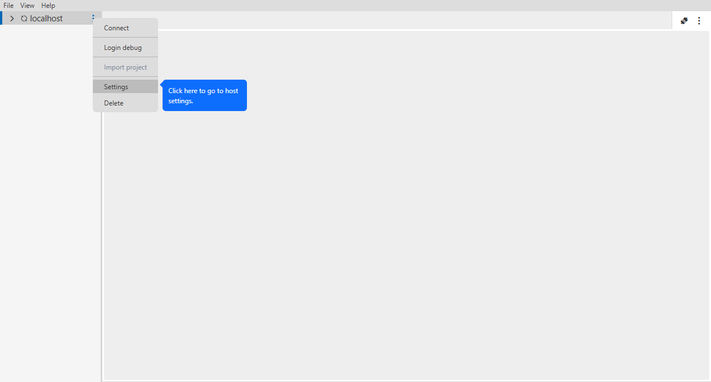
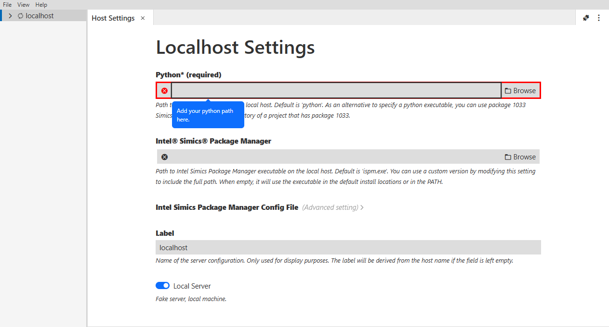

This document provides an introduction to the graphical user interface, Intel® Simics® Graphical User Interface (GUI) for running Intel® Simics® Simulator. It provides target consoles, CLI, and host terminals. You can start the simulator from it, on your local machines (Linux* or Windows*).
This tutorial uses an example to illustrate how to:
- Setup a machine host.
- Add a project.
- Start a simulation
Prerequisite:
- Make sure you have gone through sections, Introduction and GUI Installation Guide.
- Open the host context menu by clicking on the three dots or right click on the project.
- Click on "Settings".

Enter your python path in the input field:

- Click on the three dots on the host.
- Hover over "Import Project" and click on "Browse Manually".
- Choose your project and press "Add Project".

- Click on the three dots on the host.
- Hover over "Import project" and click on "Projects from Intel Simics Package Manager".

A prompt will open with your projects created with the package manager.
- Uncheck the project(s) you don't want to add.
- Click on "Add Project(s)".

- Open the project context menu by clicking on the three dots or right click on the project.
- Click on "Start".